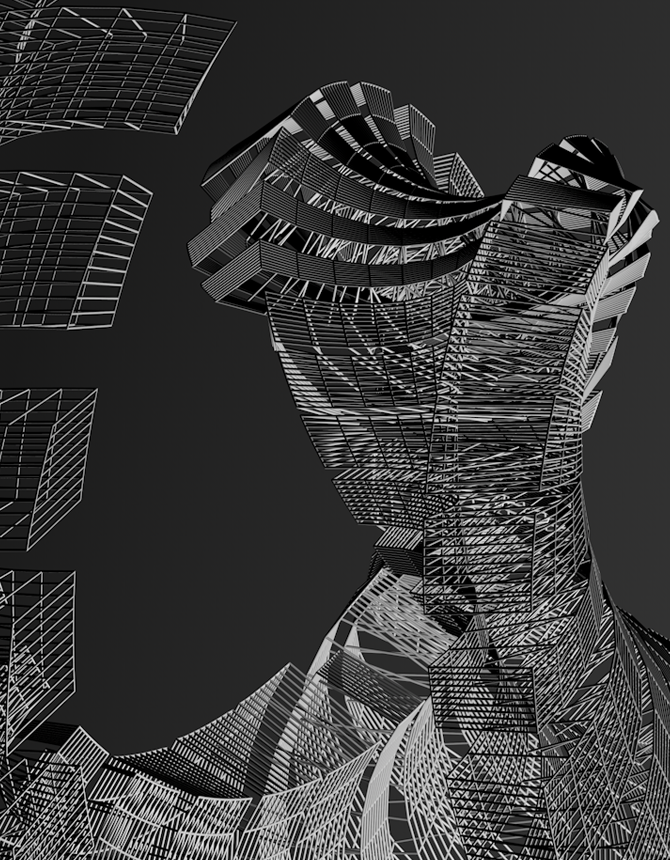
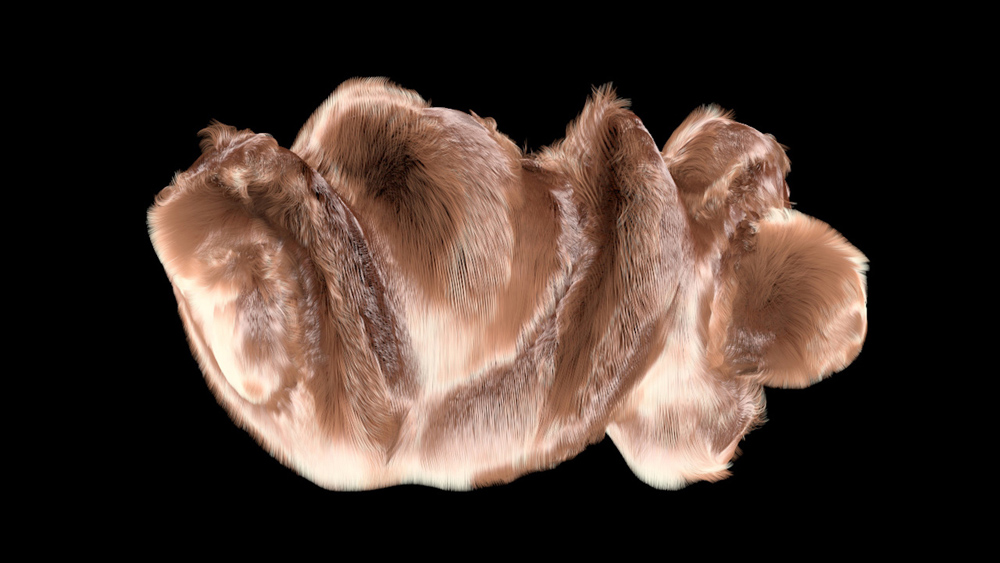
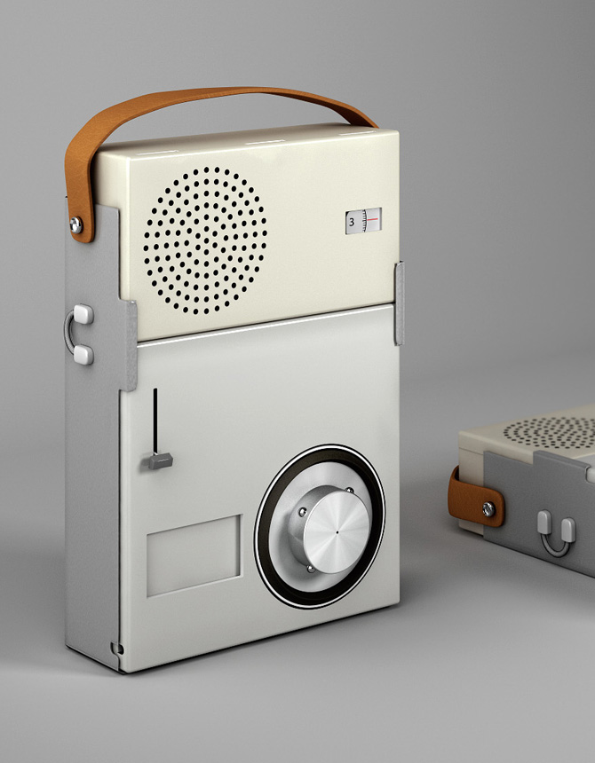

Press the button to see both modes
With the location map service, the user can create and export individual maps. He can embed these maps on his company website via iframe. The user is guided through the creation process with the help of a realtime wizard.
To improve test coverage, automated surface tests are used. These automated tests (test cases) were systematized during specification, quotation and test execution.
In the early stages of the engineering project, digital renderings were designed to give stakeholders an impression of the retrofit buses. For this purpose, Pariser Platz in Berlin was completely recreated.
In order to monitor the production of the tape laying process and the resulting component quality, an image-based process monitoring system was design and build.
The Lab is a collection of visual explorations in the field of high-end-rendering as used in virtual and augmented reality.
The collection spans a wide range of tasks such as modeling, texturing, lighting as well as scene building and animation.